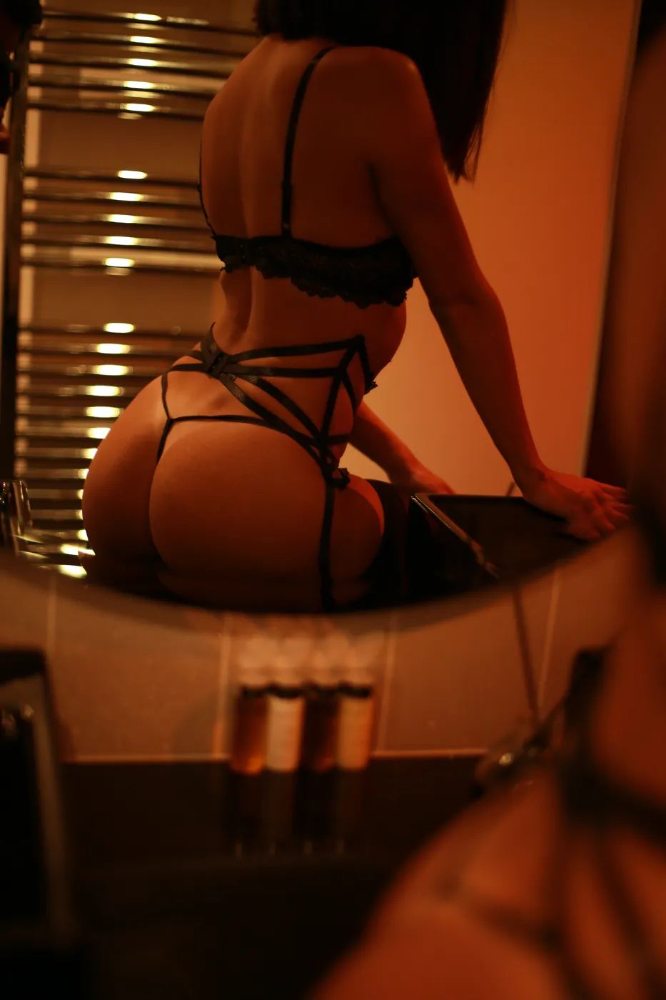
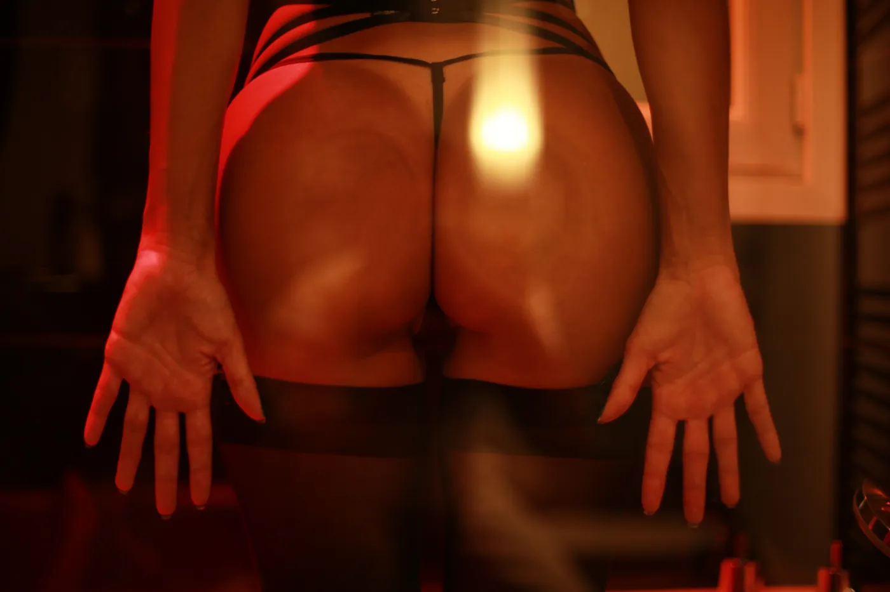

XAVIER YOU
PORTFOLIO
À fleur de nacre
Sous le rouge, à dessein
Isis à demi dévoilée
Le temps d’une pose
La nuit lui appartient
Pink Flow
La chambre des lianes
CHI SONO
CONTATTI
FR
EN
IT
À fleur de nacre
Sous le rouge, à dessein
Isis à demi dévoilée
Le temps d’une pose
La nuit lui appartient
Pink Flow
La chambre des lianes
Chi sono
Contatti
FR
EN
IT
Serie 2 / 7
Sous le rouge, à dessein
Cannes, 2019


← Serie precedente
À fleur de nacre
Serie successiva →
Isis à demi dévoilée